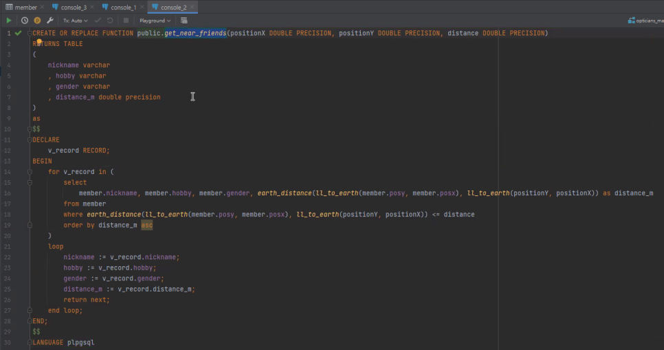

Procedure

소개
당근마켓 동네생활, 지역 모임 카페 등. 내 주변에 사는 사람들과 소통하고 싶을 때가 있습니다.
Kakao 로컬 API를 통해 내 주변에 사는 회원을 조회할 수 있는 API를 만들었습니다.
대량의 데이터를 빠르게 쿼리하기 위해 프로시저를 활용했습니다.
제작기간 : 2023.03.07 - 03.09
사용 기술
Back-end : Java https://gitlab.com/all_xm/finalprojectapi
API : Kakao 로컬 API